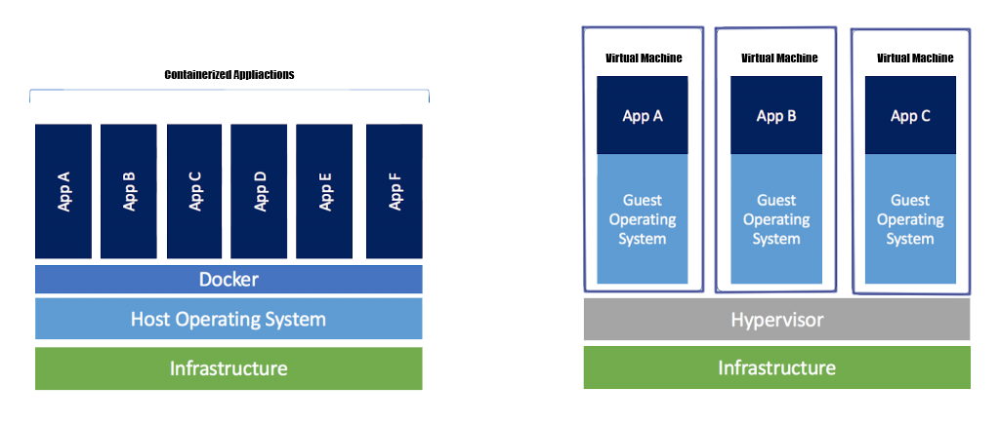

Docker Vs Maquinas Virtuales
Para saber mas sobre el tema
m,m# use phusion/baseimage as base image. from ubuntu:latest # use baseimage-docker's init system. cmd ["/sbin/my_init"] # install prerequisites run apt-get update; \ apt-get install -y udhcpd # set up start up scripts run mkdir /etc/service/udhcpd add udhcpd.sh /etc/service/udhcpd/run run chmod +x /etc/service/udhcpd/run # clean up apt when done. run apt-get clean && rm -rf /var/lib/apt/lists/* /tmp/* /var/tmp/* # expose the port expose 67 expose 67/udp expose 68 expose 68/udp # volumes volume /data
Que es un dockerfile?
Un dockerfile es una receta para crear una imagen p ara una aplicación particular de docker. de este modo p odemos tomar una imagen base, instal arle programas, co nfigurar esos programas y dejarla preparada para crear contenedores a partir de ella
- Comando from: Buscas la imagen mas reciente de ubuntu con ubuntu:latest
- Comando run: Ejecutas y añades scrip para actualizar el sistema e instalar udhcp
- Comando expose: Abres los puertos 67 y 68
- Comando volume: Comparte una carpeta entre el contenedor de docker y el host (tu ordenador)
CREAMOS EL ARCHIVO udhcpd.conf
# The start and end of the IP lease block
start 172.17.0.200
end 172.17.0.210
# The interface that udhcpd will use
interface eth0
opt dns 192.168.18.3 8.8.8.8
option subnet 255.255.0.0
opt router 172.17.0.1
# opt wins 192.168.10.10
# option dns 129.219.13.81 # appended to above DNS servers for a total of 3
option domain local
option lease 864000
CREAR EL CONTENEDOR:
docker build .
LANZAR EL CONTENEDOR:
docker run -d --net=host -p 67:67 -p 67:67/udp -p 68:68 -p 68:68/udp
--name=dhcpd -v "RUTA AL DIRECTORIO udhcpd"/data ubuntu:latest
ABRIR TERMINAL EN CONTENEDOR:
docker exec -ti NOMBRE_CONTENEDOR /bin/bash